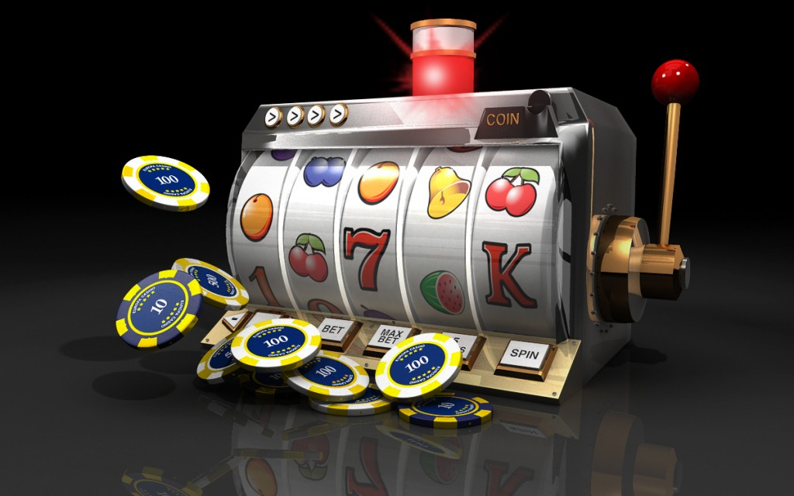
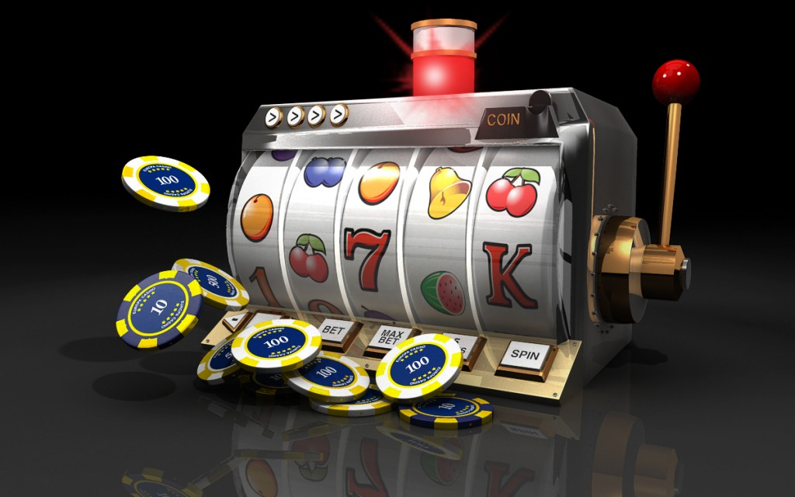

The release train label (see below) is actually only used explicitly in one artifact: "spring-cloud-dependencies" (all the others have normal numeric release labels tied to their parent project).  The depednencies POM is the one you can use as a
The depednencies POM is the one you can use as a BOM for dependencymanagement. Example using the latest version with the config lientand eureka (change the artifact ids to pull in other starters):